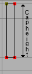
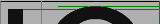
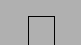
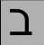

- Advance Width
- The distance between the start of this character and the start of the next character. Sometimes called the character's width.
- Ascender
-
A stem on a lower case letter which extends above the x-height. "l" has an
ascender.
See also X-height, Cap-height, Descender, Overshoot, Baseline - Ascent
-
In traditional typography the ascent of a font was the distance from the
top of a block of type to the baseline.
Its precise meaning in modern typograph seems to vary with different definers.
- Baseline
-
The baseline is the horizontal line on which the (latin, greek, cyrillic)
letters sit. The baseline will probably be in a different place for different
scripts. In Indic scripts most letters descend below the baseline. In CJK
scripts there is also a vertical baseline usually in the middle of the
character.
See also X-height, Cap-height, Ascender, Descender, Overshoot - Bezier curve or Bezier splines
- Beziér curves are described in detail in the bezier section of the main manual.
- Black letter
-
Any of various type families based on medieval handwriting.
See also gothic. - Bold
- A common font style. The stems of the characters are wider than in the normal font, given the letters a darker impression.
- Cap-height
-
The height of a capital letter above the baseline (with a flat top like "I"
as opposed to one with a curved to like "O").
See also X-height, Ascender, Descender, Overshoot, Baseline - CFF
- Compact Font Format used within OpenType postscript fonts.
- Character
- A character is a Platonic ideal reified into at least one glyph.
- Character set
- A character set is an unordered set of characters
- CID
- In some CJK PostScript fonts the glyphs are not named but are refered to by a CID number.
- CID-keyed font
- A PostScript font in which the glyphs
- CJK
-
Chinese, Japanese, Korean. These three languages require fonts with a huge
number of characters. All three share a writing system based on Chinese
ideographs (though they have undergone seperate evolution in each country,
indeed mainland Chinese fonts are different from those used in Taiwan and
Hong Kong).
Japanese and Korean also have phonetic syllabaries. The Japanese have two syllabaries, hiragona and katakana which have about 60 syllables. The Koreans have one syllabary, hangul with tens of thousands of syllables.
- CJKV
- Chinese, Japanese, Korean, Vietnamese. These four languages require fonts with a huge number of characters.
- Condensed
- A condensed font is one where the space between the stems of the characters, and the distance between characters themselves has been reduced.
- Descender
-
A stem on a lower case letter which extends below the baseline. "p" has a
descender.
See also X-height, Cap-height, Ascender, Overshoot, Baseline - Descent
-
In traditional typography the descent of a font was the distance from the
bottom of a block of type to the baseline.
Its precise meaning in modern typograph seems to vary with different definers.
- Didot point
- The European point. 62 2/3 points per 23.566mm ( 2.66pt/mm or 67.54pt/inch )
- em
-
A linear unit equal to the point size of the font. In a 10 point font, the em will be 10 points. An em-space is white-space that is as wide as the point size. An em-dash is a horizontal bar that is as wide as the point size.
An em-square is a square one em to each side. In traditional typograph (when each letter was cast in metal) the glyph had to be drawn within the em-square.
- em unit
- In a scalable font the "em" is subdivided into units. In a postscript font there are usually 1000 units to the em. In a TrueType font there might be 512, 1024 or 2048 units to the em. In an Ikarus font there are 15,000 units. PfaEdit uses these units as the basis of its coordinate system.
- en
- One half of an "em"
- Encoding
- An encoding is a mapping from a set of bytes onto a character set. It is what determines which byte sequence represents which character. The words "encoding" and "character set" are often used synonymously. The specification for ASCII specifies both a character set and an encoding. But CJK character sets often have multiple encodings for the character set (end multiple character sets for some encodings).
- Extended
- An extended font is one where the space between the stems of the characters, and the distance between characters themselves has been increased.
- Font
-
A collection of glyphs, generally with at least one glyph associated with
each character in the font's character set, often
with an encoding.
A font contains much of the information needed to turn a sequence of bytes into a set of pictures representing the characters specified by those bytes.
In traditional typesetting a font was a collection of little blocks of metal each with a graven image of a letter on it. Traditionally there was a different font for each point-size.
- Font Family, or just Family
- A collection of related fonts. Often including plain, italic and bold styles.
- Fractur
-
The old black letter writing style used in Germany up until the end of
world war II.
See also gothic.
- Glyph
-
A glyph is an image, often asociated with one or several
characters. So the glyph used to draw "f" is associated
with the character f, while the glyph for the "fi" ligature is associated
with both f and i. In simple latin fonts the association is often one to
one (there is exactly one glyph for each character), while in more complex
fonts or scripts there may be several glyphs per character (In renaissance
printing the letter "s" had two glyphs associated with it, one, the long-s,
was used initially and medially, the other, the short-s, was used only at
the end of words). And in the ligatures one glyph is associated with two
or more characters.
Fonts are collections of glyphs with some form of mapping from character to glyph.
- Gothic
- The German monks at the time of Gutenburg used a black-letter writing style, and he copied their handwriting in his typefaces for printing. Italian type designers (after printing spread south) sneered at the style, prefering the type designs left by the romans. As a term of contempt they used the word gothic, the style of the goths who helped destroy the roman empire.
- Grotesque
- See also sans-serif.
- Hints
- These are described in detail in the main manual. They help the rasterize to draw a glyph well at small pointsizes.
- Italic
-
A slanted style of a font, generally used for emphasis.
Italic differs from Oblique in that the transformation from the plain to the slanted form involves more than just skewing the letterforms. Generally the lower-case a changes to a, the serifs on lower-case letters like i (i) change, and the font generally gains a freer look to it.
- Kerning
- When the default spacing between two characters is inapproriate the font may include extra information to indicate that when a given character (say "T") is followed by another character (say "o") then the advance width of the "T" should be adjusted by a certain amount to make for a more pleasing display.
- Kern pair
- A pair of characters for which kerning information has been specified.
- Left side bearing
- The horizontal distance from a character's origin to its leftmost extent. This may be negative or positive.
- Lemur
-
 A monotypic genus of prosimian primates, now found only on Madagascar but
formally (about 50 million years ago) members of this family were much
more wide spread.
A monotypic genus of prosimian primates, now found only on Madagascar but
formally (about 50 million years ago) members of this family were much
more wide spread.
- LGC
- Latin, Greek, Cyrillic. These three alphabets have evolved side by side over the last few thousand years. The letter forms are very similar (and some letters are shared). Many concepts such as "lower case", "italic" are applicable to these three alphabets and not to any others.
- Monospace
- A font in which all characters have the same advance width. These are sometimes called typewriter fonts.
- OpenType
-
A type of font. It is an attempt to merge postscript and truetype fonts
into one specification.
An opentype font may contain either a truetype or a postscript font inside it.
It contains many of the same data tables for information like encodings that were present in truetype fonts. It also can contain additional information such as positional glyph selection (needed for arabic), ligatures, etc.
- Oblique
-
- A slanted style of a font, generally used for emphasis.
Oblique differs from Italic in that the transformation from the plain to the slanted form involves just skewing the letterforms.
- A slanted style of a font, generally used for emphasis.
- Overshoot 
-
In order for the curved shape of the "O" to appear to be the same height
as the flat top of the "I" it tends to "overshoot" the cap-height (or x-height,
or undershoot the baseline) by about 3% of the cap-height (or x-height).
For a triangular shape (such as "A") the overshoot is even greater, perhaps
5%.
These guidelines are based on the way the eye works and the optical illusions it generates.
See also X-height, Cap-height, Ascender, Descender, Baseline
- Pica point
- The Anglo-American point. With 72.27 points per inch ( 2.85pt /mm ).
- Point
-
A point is a unit of measurement. There were two different definitions for
"point" in common usage before the advent of computers. The one in use in
the Anglo-Saxon printing world was the "pica point" with 72.27 points per
inch ( 2.85pt /mm ), while the one used in Europe was the didot point with
62 2/3 points per 23.566mm ( 2.66pt/mm or 67.54pt/inch
).
These two points were so arranged that text at a given point-size would have approximately the same cap-height in both systems, the didot point would have extra white-space above the capitals to contain the accents present in most non-English Latin based scripts.
This has the interesting side effect that a font designed for European usage should have a smaller proportion of the vertical em given over to the text body. I believe that computer fonts tend to ignore this, so presumably european printers now set with more leading.
As far as I can tell, computers tend to work in pica points (but this may be because I am in the US).
- Point Size
- In traditional typography a 10pt font was one where the block of metal for each character was 10 points high.
- PostScript
-
PostScript is a page-layout language used by many printers. The language
contains the specifications of several different font formats. The main manual has a section
describing how PostScript differs from TrueType.
- Type 1 -- This is the old standard for PostScript fonts. Such a font generally has the extension .pfb (or .pfa). A type 1 font is limitted to a one byte encoding (ie. only 256 characters may be encoded).
- Type 2 -- This is the format used within OpenType fonts. It is almost the same as Type 1, but has a few extensions and a more compact format.
- Type 3 -- This format allows full postscript within the font, but it means that no hints are allowed, so these fonts will not look as nice at small point-sizes. Also most rasterizers are incapable of dealing with them. A type 0 font is limitted to a one byte encoding (ie. only 256 characters may be encoded).
- Type 0 -- This format is used for collecting many sub-fonts (of Type 1 or Type 3) into one big font, and was used for CJK or Unicode fonts.
- Type 42 -- A TrueType font wrapped up in PostScript. Sort of the opposite from OpenType.
- CID -- This format is used for CJK fonts with large numbers of glyphs.
- Right side bearing
- The horizontal distance from a character's rightmost extent to the character's advance width. This may be positive or negative.
- Sans Serif
- See the section on serifs.
- Serif
latin
greek
cyrillic
 a serif sans serif hebrew 
 bet serif sans serif -
Back two thousand years ago when the Romans were carving their letters on
stone monuments, they discovered that they could reduce the chance of the
stone cracking by adding fine lines at the terminations of the main stems
of a character.
These fine lines were called serifs, and came to have an esthetic appeal of their own. Early type designers added them to their fonts for esthetic rather than functional reasons.
At the end of the nineteenth and beginning of the twentieth, type-designers started designing fonts without serifs. These were initialially called grotesques because their form appeared so strange, they are now generally called sans-serif.
Other writing systems (Hebrew for one) have their own serifs. Hebrew serifs are rather different from latin (cyrillic, greek) serifs and I don't know their history. Hebrew serifs only occur at the top of a character
I would welcome examples from other scripts of serifed and sans-serifed characters.
- Spline
- A curved line segment. See the section in the manual on splines. The splines used in PfaEdit are all third order bezier splines.
- Style
-
There are various conventional varients of a font. In probably any writing
system the thickness of the stems of the characters may be varied, this is
called the weight of a font. Common weights are normal and bold.
In LGC alphabets an italic (or oblique) style has arisen and is used for emphasis.
Fonts are often compressed into a condensed style, or expanded out into an extended style.
Various other styles are in occasional use: underline, overstrike, outline, shadow.
- Syllabary
- A syllabary is a phonetic writing system like an alphabet. Unlike an alphabet the sound-unit which is written is a syllable rather than a letter. In Japanese KataKana the sound "ka" is represented by one glyph. Syllabaries tend to be bigger than alphabets (KataKana requires about 60 different characters, while the Korean Hangul requires tens of thousands).
- True Type
- A type of font invented by Apple and shared with MicroSoft. It specifies
outlines with 2 degree bezier curves, contains inovative
hinting controls, and an expandable series of tables for containing whatever
additional information is deemed imported to the font.
Apple and Adobe/MicroSoft have expanded these tables in different ways, although attempting to achieve the same effect.
- Type 1
- A type of PostScript font which see.
- Type 2
- A type of PostScript font, used within OpenType font wrappers.
- Type 3
- A very general type of PostScript font, which see.
- Type 0
- A type of PostScript font, which see.
- Typewriter
- See Monospace.
- Weight
-
The weight of a font is how thick (dark) the stems of the characters are.
Traditionally weight is named, but recently numbers have been applied to weights.
Thin 100 Extra-Light 200 Light 300 Normal 400 Medium 500 Demi-Bold 600 Bold 700 Heavy 800 Black 900 Nord Ultra - Width
- This is a slightly ambiguous term and is sometimes used to mean the advance width (the distance from the start of this character to the start of the next character), and sometimes used to mean the distance from the left side bearing to the right side bearing.